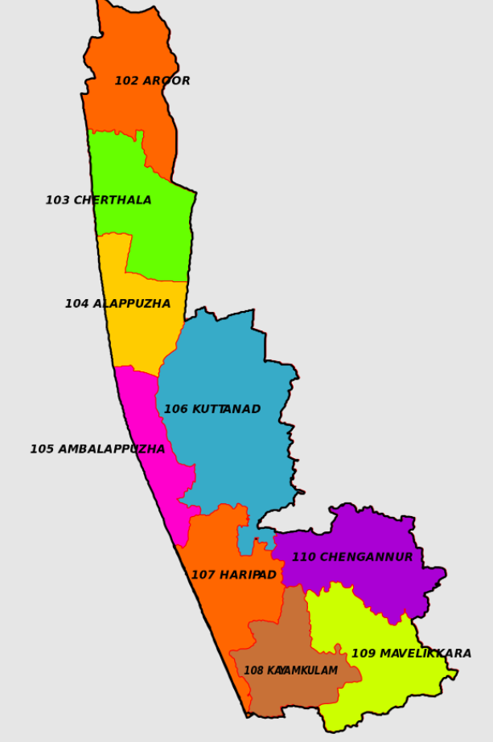

Alapuzha
Tourist Destinations
Aleppy backwaters
Referred to as the ‘Venice of the East’, Alleppey (now Alappuzha) is what you call, a true paradise. Adorned with a picture perfect landscape, sparkling rivers, lush greenery, and beautiful freshwater lakes, Alleppey is home to immense natural beauty. A popular backwater destination, Alleppey in Kerala is visited by thousands of travelers every year. It is a destination for every kind of traveler, be it a nature lover, wildlife enthusiast, photo bug or a wanderer. Alleppey is immensely popular for its scenic beauty and tranquility, which is why, tourists from all across the country and the world visit this place. It is the perfect destination for those wish to spend some time away from their long and hectic schedules. For a long and peaceful holiday, what could be better than cruising along those palm-fringed waterways of Alleppey? The experience of passing through those paddy fields, coconut groves, Chinese fishing nets, villages, and temples is truly enchanting. The cool wind keeps caressing your face that further adds to the charm.


Ambalapuzha sree krishna swamy temple
Ambalappuzha Sree Krishna Swamy Temple is an Indian Hindu temple dedicated to Krishna at Ambalappuzha in Alappuzha district of Kerala. The temple is believed to have been built during 15th century AD by the local ruler Chembakasserry Pooradam Thirunal-Devanarayanan Thampuran. It is one of the seven greatest Vaishnava temples in Travancore.[1] The idol at Ambalapuzha is likened to Parthasarthi form of Vishnu, holding a whip in his right hand and a conch in his left. During the raids of Tipu Sultan in 1789, the idol of Sri Krishna from the Guruvayoor Temple was brought to the Ambalappuzha Temple for safe keeping for 12 years. Payasam, a sweet pudding made of rice and milk is served in the temple and is believed that the Lord Guruvayoorappan visits the temple daily to accept the offering.
Krishnapuram palace
The Krishnapuram Palace is a palace and museum located in Kayamkulam near Alappuzha in Alappuzha district, Kerala in southwestern India. It was built in the 18th century by Anizham Thirunal Marthanda Varma (1729–1758 AD), the Travancore kingdom. It is built in the architectural style of Kerala with gabled roof, narrow corridor and dormer windows, near the Krishnaswamy Temple at Krishnapuram.[1][2][3][4][5] The palace is maintained by the Kerala State Department of Archaeology and contains exhibits that belonged to the Palace and its former occupant, the Travancore Maharaja Marthanda Varma. It is also famous for a large pond within the palace complex.[1] It is also said that an underground escape route runs from the bottom of the pond as a possible escape route from enemies